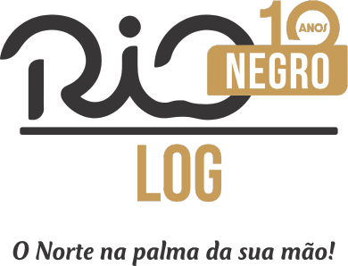

Retiradas em Manaus
Coletamos sua carga em aeroportos, lojas e empresas na capital com agilidade.
Saiba mais →Cores, tipos, componentes e movimento para o site da Rio Negro Log. Tudo parte do rio que dá nome à empresa: a água escura de tanino, o sol dourado sobre ela e o caminho fluvial que liga Manaus ao interior.
Cota do Rio Negro no Porto de Manaus. Leitura de exemplo para ilustrar o grafismo da régua.
A identidade traduz a experiência de quem navega o Rio Negro: superfícies escuras e calmas, reflexo dourado e a precisão de quem mede o rio todos os dias.
Fundos escuros e quentes, nunca preto puro. O Rio Negro tem cor de chá forte por causa dos taninos das folhas. É a base de faixas, rodapés e da abertura das páginas.
O dourado do logotipo aparece como luz: em botões, números e linhas finas. Usado com economia, ele marca o que importa na tela, como uma ação, um prazo ou uma cota.
O escuro do Negro corre ao lado do barrento do Solimões sem se misturar. Esse contraste vira divisor de seção, gradiente e animação de transição.
Seis cores de marca e três de estado. Clique no código para copiar. O dourado e o cinza-carvão vêm do logotipo atual e se mantêm; as demais cores foram tiradas do próprio rio.
--agua-pretaFundos de abertura, rodapé, tema escuro.--taninoProfundidade em gradientes da água.--ouroCor de ação: botões, destaques, cotas.--ouro-fundoDourado envelhecido do site atual: bordas, ícones e fotos tratadas.--solimoesContraponto do Encontro das Águas.--carvaoCinza do logotipo, títulos sobre claro.--bg (claro)Fundo das páginas no tema claro.--okEstado: entregue, confirmado.--critEstado: atraso, erro no formulário.| Par | Combinação | Razão | Uso |
|---|---|---|---|
| Aa | Ouro sobre Água Preta | 8,9 : 1 | Títulos e números na abertura |
| Aa | Tanino escuro sobre Ouro | 8,3 : 1 | Texto do botão primário |
| Aa | Carvão sobre Praia | 11,1 : 1 | Texto corrido no tema claro |
| Aa | Ouro escuro sobre Praia | 5,8 : 1 | Links e rótulos no tema claro |
| Aa | Ouro sobre Praia | 2,0 : 1 | Só em formas e linhas, nunca em texto |
Montserrat carrega os títulos com o peso geométrico do logotipo. Poppins entra nos destaques: números, botões, rótulos e chamadas. Nunito Sans deixa o texto longo leve de ler.
Pesos 600 a 800. Caixa alta para títulos de impacto, como no “NEGRO LOG” do logotipo. Espaçamento levemente negativo em tamanhos grandes.
600 · 700 · 800 · 700 itálicoPesos 500 e 600. Números de prazo e cota, botões, etiquetas de modal, menus e rótulos em caixa alta com espaçamento aberto.
500 · 600 · algarismos tabularesPesos 400 e 600. Parágrafos, descrições de serviço e formulários. Linhas de até 65 caracteres.
400 · 600A versão colorida fica sobre fundos claros. A versão branca fica sobre Água Preta e sobre fotos escuras do rio.

Botões, etiquetas de modal, cartões de serviço, rastreio e orçamento. Passe o mouse e clique para ver os estados.
Coletamos sua carga em aeroportos, lojas e empresas na capital com agilidade.
Saiba mais →Levamos sua mercadoria aos municípios do Amazonas com segurança e no prazo.
Saiba mais →Rodoviário, fluvial ou aéreo: soluções completas para sua logística.
Saiba mais →Entregas rápidas em Manaus para pessoas físicas e jurídicas.
Saiba mais →Sete animações com nomes do rio. Elementos entram da esquerda para a direita, como a correnteza, e sobem de baixo para cima, como a cheia. Use “Repetir” para rever cada uma.
--dur-rapida--dur-base--dur-lenta--staggercubic-bezier(.22,.8,.24,1)cubic-bezier(.65,0,.35,1)Desliza da esquerda com leve inclinação, como algo levado pela água. Para títulos, rótulos e a linha dourada que os acompanha.
A imagem é revelada de baixo para cima, como o nível do rio subindo na régua. Para fotos, mapas e blocos de destaque grandes.
Surge desfocado e ganha nitidez, como um reflexo na água escura que se acalma. Para parágrafos e cartões de texto.
Itens entram em fila, um após o outro, como balsas puxadas por um empurrador. Para cartões de serviço, etapas de rota e logos de clientes.
O número sobe até o valor final, como a leitura da régua do porto. Sempre em Poppins com algarismos tabulares, para a largura não pular.
Duas águas chegam de lados opostos e param lado a lado, sem se misturar. Para divisores de seção, troca de página e telas de carregamento.
A onda que um barco deixa ao passar. Uma ondulação parte do ponto do clique em botões e cartões clicáveis. Clique no botão ao lado para testar.
Um pulso suave e contínuo no ponto da etapa atual do rastreio. É a única animação em laço do site; todas as outras rodam uma vez.
/* Só esconde quando o JS está ativo: sem JS, tudo aparece */
.js [data-anim] { opacity: 0; }
.js [data-anim].is-visible { animation-duration: var(--dur-base); animation-timing-function: var(--ease-correnteza); animation-fill-mode: both; animation-delay: calc(var(--i, 0) * var(--stagger)); }
[data-anim="correnteza"].is-visible { animation-name: correnteza; }
[data-anim="reflexo"].is-visible { animation-name: reflexo; }
[data-anim="mare"].is-visible { animation-name: mare; animation-duration: var(--dur-lenta); animation-timing-function: var(--ease-mare); }
@keyframes correnteza { from { opacity: 0; transform: translateX(-36px) skewX(-6deg); } to { opacity: 1; transform: none; } }
@keyframes reflexo { from { opacity: 0; filter: blur(8px); transform: translateY(14px); } to { opacity: 1; filter: blur(0); transform: none; } }
@keyframes mare { from { clip-path: inset(100% 0 0 0); opacity: 1; } to { clip-path: inset(0); opacity: 1; } }
@media (prefers-reduced-motion: reduce) {
.js [data-anim] { opacity: 1; animation: none !important; }
}document.documentElement.classList.add('js');
const io = new IntersectionObserver((entradas) => {
entradas.forEach((e) => {
if (!e.isIntersecting) return;
e.target.classList.add('is-visible');
io.unobserve(e.target); // anima uma vez só
});
}, { rootMargin: '0px 0px -12% 0px' });
document.querySelectorAll('[data-anim]').forEach((el) => io.observe(el));
// Comboio: numere os filhos para a cascata
document.querySelectorAll('[data-comboio]').forEach((lista) =>
[...lista.children].forEach((item, i) => {
item.dataset.anim = 'correnteza';
item.style.setProperty('--i', Math.min(i, 5));
}));Cada elemento anima uma única vez, quando entra na tela. Ao voltar a rolagem, ele já está no lugar.
Use uma animação de destaque por dobra da página. O resto entra com Reflexo, mais discreto.
Se o sistema pedir menos movimento, o conteúdo aparece direto, sem deslocamento nem desfoque.
Todo espaçamento é múltiplo de 4 px. Cantos discretos: campos com 6 px, cartões com 12 px, etiquetas em pílula.
--r-campo · 6px--r-card · 12px--r-pilulaDireta, segura e regional sem exagero. Diga para onde a carga vai, por qual modal e em quanto tempo.
“Sua carga sai de Manaus na balsa de quinta e chega a Tefé no domingo.”
Concreto: dia, modal e destino.“Soluções logísticas inovadoras e disruptivas para o seu negócio.”
Genérico, serve para qualquer empresa.“Na seca, alguns trechos ficam mais lentos. Avisamos o novo prazo antes do embarque.”
Fala do rio com franqueza.“Ops! Algo deu errado 😕”
Mensagem de erro deve dizer o que houve e o que fazer.